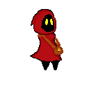
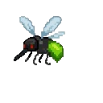
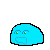
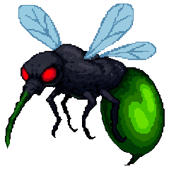

Projet en cours : Motrilem

Contexte du projet
Motrilem est un projet personnel en cours de développement. Il s’agit d’un jeu 2D de type metroidvania, réalisé sous Unity. Le joueur incarne un personnage mystérieux, mort 5000 ans avant les événements du jeu, et revenu à la vie sans aucun souvenir de son passé.
Univers et histoire
L’histoire se déroule un an après le réveil du protagoniste. Celui‑ci découvre un livre ancien relatant la légende de deux frères mages : l’un héros, l’autre devenu un puissant antagoniste. Leur affrontement s’est terminé par la mort des deux.
En lisant ce livre, le protagoniste retrouve brièvement la mémoire, avant que celle‑ci ne soit absorbée par l’ouvrage. Il ne lui reste qu’un souvenir : la maîtrise d’un type de magie. Le joueur pourra choisir entre trois affinités :
- Magie du feu
- Magie de la foudre
- Magie de la glace
Pour retrouver son identité, il devra récupérer les pages du livre dispersées dans le monde, chacune gardée par des ennemis ou des boss.
Mon rôle dans le projet
En tant que développeur unique du projet, je m’occupe de :
- la programmation du gameplay (déplacements, collisions, attaques) ;
- la création des assets 2D (sprites, animations) ;
- la conception des ennemis et de leurs comportements ;
- la création de l’univers, du scénario et des mécaniques de progression ;
- l’intégration des systèmes de magie et d’améliorations ;
- la gestion du projet sous Unity et Git.
Personnage principal
Voici le sprite du protagoniste :

Ennemis et créatures
Quelques ennemis déjà implémentés :
-
Moustique

-
Slime

-
Premier boss

Fonctionnalités déjà développées
- Système de déplacement avec gestion des collisions
- Animations du personnage
Livrables
- Prototype jouable sous Unity
- Sprites et animations originaux
- Scripts C# (déplacement)
- Documentation du lore et des mécaniques
Compétences du BUT démontrées
- C1 – Développement d’application : C#, Unity, architecture gameplay.
- C2 – Optimisation : gestion des collisions, optimisation sprites.
- C5 – Conduite de projet : organisation, planification, pipeline de production.
Apprentissages Critiques (AC) démontrés
- AC11 — Implémenter des conceptions simples (gameplay, IA (futur)).
- AC12 — Élaborer des conceptions simples (architecture Unity).
- AC14 — Développer des interfaces utilisateurs (HUD futur).
- AC22 — Utiliser des algorithmes adaptés (IA ennemis(futur), collisions).
- AC23 — Améliorer les performances (optimisation sprites et collisions).
- AC51 — Organiser un projet (pipeline Unity, tâches).
Analyse réflexive
Ce projet m’aide à approfondir la programmation orientée objet en C#, la logique de moteur de jeu et la création d’assets 2D. La difficulté principale réside dans la gestion des collisions et des comportements ennemis, ainsi que dans la cohérence de l’univers. Ce projet me permet également d’améliorer ma capacité à structurer un projet complexe et à maintenir un code propre et évolutif.